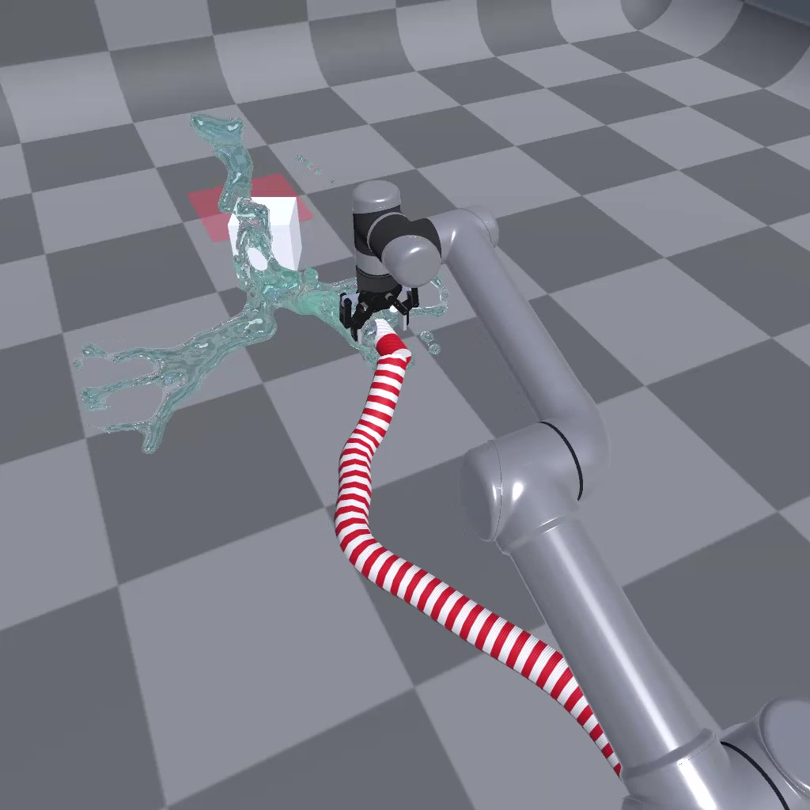
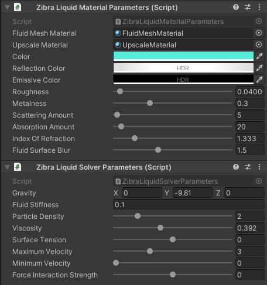
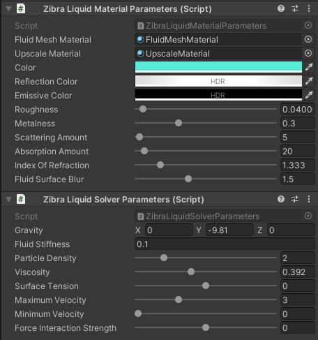

UR5 Water Pushing RL Environment Tutorial

In this tutorial, we will continue the multi-physics attribute of RFUniverse and build an RL environment for simulating a UR5 robot grasping a water pipe. The UR5 agent should be trained to move to correct position and make the water push a cube to its target range. This environment is also RL-supported and codes will be in OpenAI-Gym style.
Warning: The plug-in of this scene is only available on Windows platform. If your algorithm needs to run on Linux, we recommend using Windows WSL as the algorithm-end and Windows for the simulation-end. In this way, you do not need to modify any code.
Quick Start with prebuilt scene
For users who are not familiar with Unity Editor, we have built this scene in the latest version of RFUniverse Release. Please download it, follow README to setup your environment and enjoy!
To use this environment, you can use the following code, which is also available here.
from pyrfuniverse.envs.multi_physics import UR5WaterShootingEnv
env = UR5WaterShootingEnv(urdf_file='../Mesh/UR5/ur5_robotiq_85.urdf')
env.reset()
while 1:
obs, reward, done, info = env.step(env.action_space.sample())
if done:
env.reset()
Build scene in Unity
First of all, just like the previous tutorials, we must setup the scene in Unity Editor. In this experiment, we will use a UR5 robot as the agent. But the most important part is to use Zibra Liquid to simulate water and interact with a rigid cube. We will look in the process step by step.
Requirements
Clone the RFUniverse Unity side repository.
git clone https://github.com/mvig-robotflow/rfuniverse.git
Install the Unity Editor (>= 2021.3) and open the project cloned above.
Install Zibra Liquid Plugin.
Add general prefab into a new scene
This is to add RFUniverse into a newly created scene. This step is the same with previous tutorials.
Add UR5 robot
Next, we should add a UR5 robot into this scene. We have also prepared UR5 robot with Robotiq85 gripper in Assets/Assets/Prefab/Controller/Arm, just drag it into the scene. Don’t forget to drag the robot to Scene Attr under Base Agent (Script) in Inspector window to setup communication. In this experiment, we set the scale to 15.
Create Zibra Liquid, Emitter and Void
In this experiment, we will have three objects relative to liquid simulation. First of all, according to ZibraLiquid usage, we should have a Zibra Liquid object which can handle simulation. Create it by right click on the blank space in Hierarchy window and select Zibra -> Zibra Liquid. Next, create a ZibraLiquid Emitter object in the similar way. The ZibraLiquid Emitter object is responsible for producing water, so in our setting, we should place it as a child game object of gripper, just like the following image.

Then, create a ZibraLiquid Void, which can collect the produced water so that these water cannot affect our objects.

Create a rigid cube
Let’s move on. In our experiment, there will be a rigid object pushed by water. We select it as a cube. Create a cube and add RigidBody componet as well as the RigidbodyAttr component on it. Currently, the cube can communicate with Python, but it cannot interact with Zibra Liquid directly. To achieve the interaction, we should add a component named Zibra Neural SDF on cube and press the Generate SDF button to calculate an SDF for interaction.

After setting the SDF, we should also set the physics parameters of this cube to avoid the task too simple or too difficult. Set the Material in Box Collider with a Physical Material named Slide to enlower the friction between cube and ground. And set the mass to 0.5kg for the rigid body. After setting, the Inspector window will be same with the following image. Don’t forget to add the cube to Agent.

Create a target range for visualization
Recall that in franka robotcis tutorial, we use a ‘shadow’ cube to represent the target range. In this experiment, we will also need that. Please refer to Create the goal and create a goal in this scene.
Let Zibra Liquid knows everything
Unitl now, the basic objects are all done. However, Zibra Liquid hasn’t known what objects are in the scene. We need to add the cube to Colliders attributes and ZibraLiquid Emitter and ZibraLiquid Void to Manipulators attributes. Also, the water range is a organizable parameter. So please organize the parameters align with the following two images.
 

Up to now, the scene is partially finished. The ‘partially’ here is because we haven’t created the custom attributes to support controlling liquid. Let’s move on to the next section.

Add custom attributes
In this experiment, we need to think about how to reset Zibra Liquid in the scene and how to control the volume and initial speed of ZibraLiquid Emitter. The first problem is easy to solve: In Zibra Liquid, disable it and then enable it will result in a new start of water simulation. The second problem can be solved by passing parameters from Pyton. Thus, we can add these functions to CustomAttr.cs and custom_attr.py.
void SetZibraLiquid(IncomingMessage msg)
{
bool isEnabled = msg.ReadBoolean();
gameObject.SetActive(isEnabled);
}
void SetZibraLiquidEmitter(IncomingMessage msg)
{
float volumePerSimTime = msg.ReadFloat32();
float initVelocityX = msg.ReadFloat32();
float initVelocityY = msg.ReadFloat32();
float initVelocityZ = msg.ReadFloat32();
ZibraLiquidEmitter emitter = GetComponent<ZibraLiquidEmitter>();
emitter.VolumePerSimTime = volumePerSimTime;
emitter.InitialVelocity = new UnityEngine.Vector3(initVelocityX, initVelocityY, initVelocityZ);
}
def SetZibraLiquid(kwargs: dict) -> OutgoingMessage:
compulsory_params = ['id', 'enable']
optional_params = []
utility.CheckKwargs(kwargs, compulsory_params)
msg = OutgoingMessage()
msg.write_int32(kwargs['id'])
msg.write_string('SetZibraLiquid')
msg.write_bool(kwargs['enable'])
return msg
def SetZibraLiquidEmitter(kwargs: dict) -> OutgoingMessage:
compulsory_params = ['id', 'volumePerSimTime', 'initVelocity']
optional_params = []
utility.CheckKwargs(kwargs, compulsory_params)
msg = OutgoingMessage()
msg.write_int32(kwargs['id'])
msg.write_string('SetZibraLiquidEmitter')
msg.write_float32(kwargs['volumePerSimTime'])
msg.write_float32(kwargs['initVelocity'][0])
msg.write_float32(kwargs['initVelocity'][1])
msg.write_float32(kwargs['initVelocity'][2])
return msg
After adding codes, remember to add CustomAttr component to Zibra Liquid and ZibraLiquid Emitter, as well as drag these two game objects to Agent to setup communication.
Write Python codes
The full version code is available here. In this tutorial, we will go through the code and explain some key factors.
Observations
We also make this environment goal-conditioned. In observation, we get robot end effector pose and velocity, as well as the object pose and velocity.
def _get_obs(self):
eef_pos = self._get_eef_position()
eef_vel = self._get_eef_velocity()
eef_width = self._get_gripper_width()
robot_obs = np.concatenate((eef_pos, eef_vel, [eef_width]))
object_pos = self._get_cube_pos()
object_vel = self._get_cube_velocity()
object_rot = self._get_cube_rotation()
object_obs = np.concatenate((object_pos, object_rot, object_vel))
achieved_goal = object_pos.copy()
desired_goal = self.goal.copy()
return {
'observation': np.concatenate((robot_obs, object_obs)),
'achieved_goal': achieved_goal,
'desired_goal': desired_goal
}
def _get_eef_position(self):
return np.array(self.instance_channel.data[self.object2id['robotiq85']]['positions'][7])
def _get_eef_velocity(self):
return np.array(self.instance_channel.data[self.object2id['robotiq85']]['velocities'][7])
def _get_gripper_width(self):
left_finger_pos = np.array(
self.instance_channel.data[self.object2id['left_finger']]['position']
)
right_finger_pos = np.array(
self.instance_channel.data[self.object2id['right_finger']]['position']
)
return self._distance(left_finger_pos, right_finger_pos)
def _get_target_pos(self):
return np.array(self.instance_channel.data[self.object2id['target']]['position'])
def _get_cube_pos(self):
return np.array(self.instance_channel.data[self.object2id['cube']]['position'])
def _get_cube_velocity(self):
return np.array(self.instance_channel.data[self.object2id['cube']]['velocity'])
def _get_cube_rotation(self):
return np.array(self.instance_channel.data[self.object2id['cube']]['rotation']) / 180 * math.pi
Reset Scene
When resetting scene, we will set UR5 to its initial pose, and then reset the liquid by first disabling liquid, then enabling liquid. After liquid reset, we reset the object to a random sampled position.
def reset(self):
self.ik_controller.reset()
init_joint_positions = self.ik_controller.calculate_ik_recursive(
unity_eef_pos=self.init_pos,
eef_orn=self.eef_orn
)
init_joint_positions.append(self.init_gripper_width)
self._set_ur5_robotiq85_directly(init_joint_positions)
self.t = 0
self._reset_liquid()
object_pos = self._reset_object()
self.goal = self._sample_goal(object_pos)
return self._get_obs()
def _reset_liquid(self):
self.instance_channel.set_action(
action='SetZibraLiquid',
attr_name='custom_attr',
id=self.object2id['liquid'],
enable=False
)
self._step()
self.instance_channel.set_action(
action='SetZibraLiquid',
attr_name='custom_attr',
id=self.object2id['liquid'],
enable=True
)
self._step()
def _reset_object(self):
object_pos = self.np_random.uniform(
low=self.object_range_low, high=self.object_range_high, size=(3,)
)
self.instance_channel.set_action(
'SetTransform',
id=self.object2id['cube'],
position=list(object_pos),
rotation=[0, 0, 0]
)
self._step()
return object_pos.copy()
Step
During step, we will first accept the passed in parameters and control robot arm. We set the ZibraLiquid Emitter volume and initial velocity to be proportional to the gripper width. After simulation, we get the observation and compute reward as well as gathering other information.
def step(self, action: np.ndarray):
delta_pos = action[:3].copy() * 0.05
curr_pos = self._get_eef_position() / self.scale
target_pos = curr_pos + delta_pos
joint_positions = self.ik_controller.calculate_ik_recursive(
unity_eef_pos=target_pos,
eef_orn=self.eef_orn
)
delta_width = action[3] * 0.02
curr_width = self._get_gripper_width() / self.scale
target_width = np.clip(float(curr_width + delta_width), 0.04, 0.085)
joint_positions.append(target_width)
self._set_ur5_robotiq85(joint_positions)
self._set_liquid_parameters(self._get_gripper_width() / self.scale)
self.t += 1
obs = self._get_obs()
info = {
'is_success': self._check_success(obs['achieved_goal'], obs['desired_goal'])
}
reward = self.compute_reward(obs['achieved_goal'], obs['desired_goal'], info)
done = False
fail = self._check_fail(obs['achieved_goal'])
if fail or self.t == self.max_steps or info['is_success'] > 0:
done = True
return obs, reward, done, info
def _set_liquid_parameters(self, gripper_width):
prop = gripper_width / 0.085
volume_per_time_step = prop * self.volume_per_time_step_range[1] + \
(1 - prop) * self.volume_per_time_step_range[0]
liquid_init_velocity = prop * self.liquid_init_velocity_range[1] + \
(1 - prop) * self.liquid_init_velocity_range[0]
self.instance_channel.set_action(
'SetZibraLiquidEmitter',
attr_name='custom_attr',
id=self.object2id['emitter'],
volumePerSimTime=volume_per_time_step,
initVelocity=[0, -liquid_init_velocity, 0]
)
self._step()